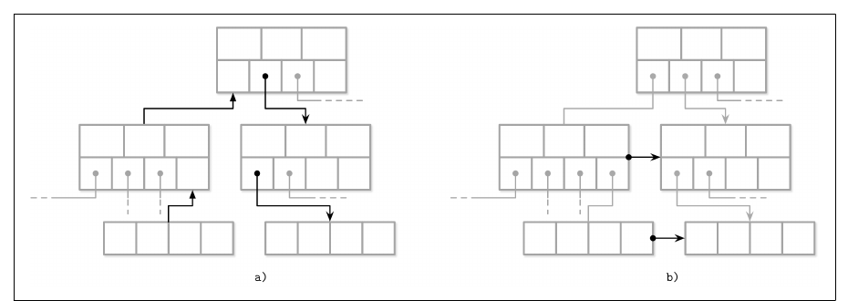
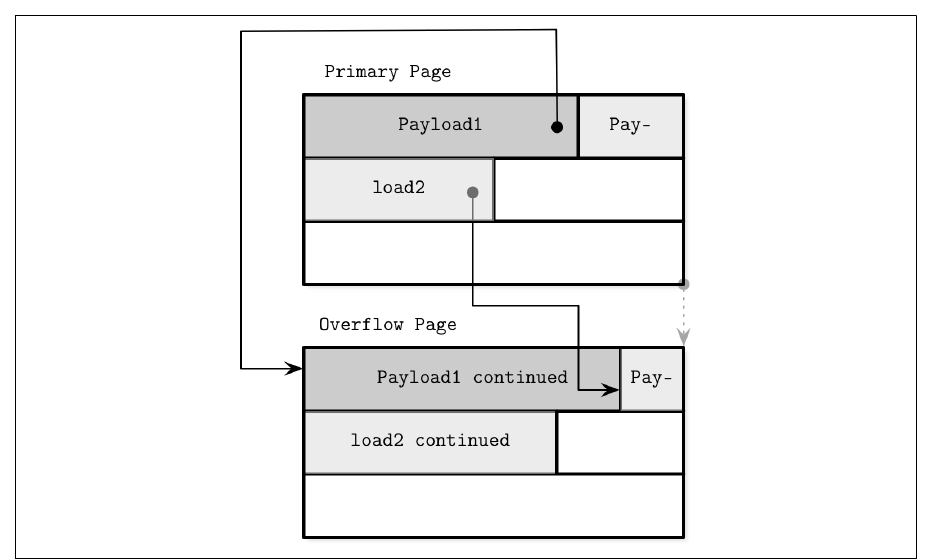
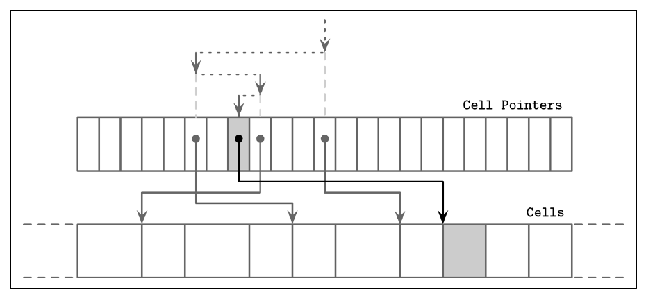
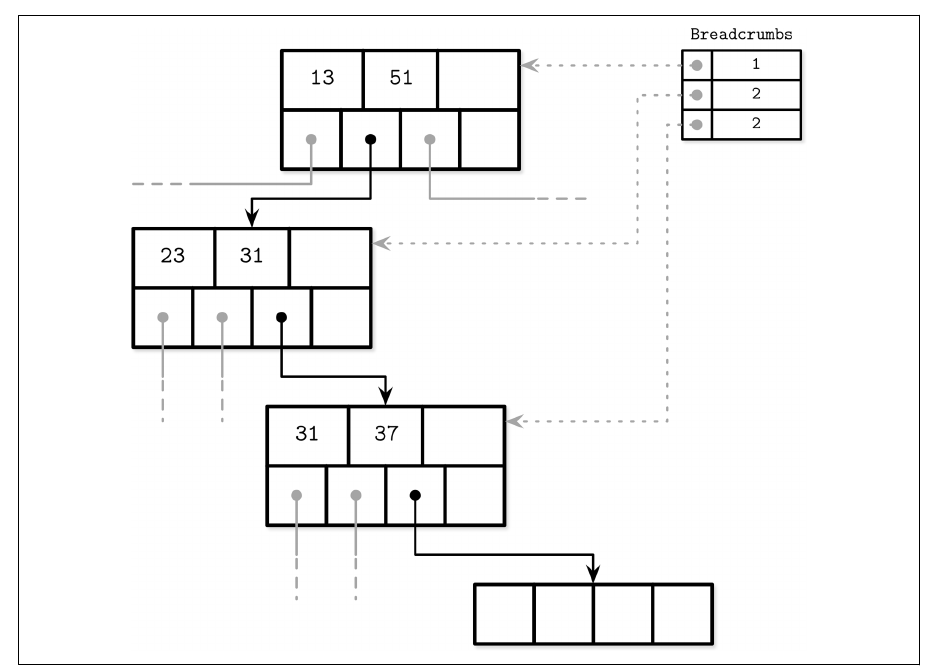
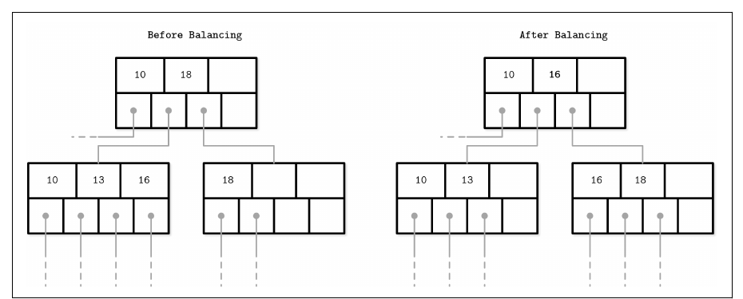

Chapter 4 · pp. 61–77
Implementing B-Trees
Database Internals, 1st Edition
This chapter connects the textbook B-Tree with real engines. It covers three groups of topics (p. 61):
- Organization: the page header, magic numbers, sibling links, the rightmost pointer (stored separately because it isn't paired with a key), high keys (as in PostgreSQL's B-link trees), and overflow pages for payloads that don't fit (pp. 61–67).
- Root-to-leaf traversal: binary search through indirection pointers, and remembering the path either with parent pointers or with a stack of breadcrumbs, so that splits and merges can propagate upward (pp. 67–70).
- Optimizations and maintenance:
- rebalancing between siblings (B*-Trees split two nodes into three, each two-thirds full);
- right-only appends for monotonically increasing keys (PostgreSQL's fastpath, SQLite's quickbalance);
- bulk loading sorted data bottom-up;
- page-wise or data-only compression;
- vacuum, which defragments pages and returns freed pages to a freelist (pp. 70–76).
The chapter’s own outline (from the book’s table of contents)
- Page Header — p. 61
- Magic Numbers — p. 62
- Sibling Links — p. 62
- Rightmost Pointers — p. 63
- Node High Keys — p. 64
- Overflow Pages — p. 65
- Binary Search — p. 67
- Binary Search with Indirection Pointers — p. 67
- Propagating Splits and Merges — p. 68
- Breadcrumbs — p. 69
- Rebalancing — p. 70
- Right-Only Appends — p. 71
- Bulk Loading — p. 72
- Compression — p. 73
- Vacuum and Maintenance — p. 74
- Fragmentation Caused by Updates and Deletes — p. 75
- Page Defragmentation — p. 76
- Summary — p. 76
From the book
Introduction
The previous chapter's principles apply to both in-place and append-only structures. This one is specific to B-Trees (p. 61).
From the book
Page header
The header holds information used for navigation, maintenance and optimization: flags describing contents and layout, the number of cells, the lower and upper offsets bounding the free space (where new offsets and cells are appended), and more (p. 61).
| Engine | Stored in the page header (p. 61) |
|---|---|
| PostgreSQL | Page size, layout version |
| MySQL InnoDB | Number of heap records, level, others |
| SQLite | Number of cells, rightmost pointer |
Page header
Magic numbers
A magic number is a multibyte constant in the file or page header. It marks a block as a page, identifies its kind or names its version (p. 62). It's used for validation: write 50 41 47 45 (hex for PAGE) and compare those four bytes on read. A random offset is very unlikely to match, so a match means the offset is probably correct (p. 62).
Page header
Sibling links
Some engines store forward and backward links to sibling pages, so a neighbour can be found without climbing back to the parent. Without them, the climb may go all the way to the root, because a parent only addresses its own children (Figure 4-1) (p. 62). The price: when a non-rightmost node splits, its right sibling's backward pointer has to be redirected to the new node. Because that change happens in a different node, it may need extra locking. B-link trees exploit sibling links for concurrency (Ch. 6, p. 107) (pp. 62–63).


Page header
Rightmost pointers
There is always one more child pointer than keys, which is where the "+1" comes from (p. 63). Many implementations pair each separator key with a child pointer and store the last pointer separately (Figure 4-2). SQLite keeps it in the header (p. 63). When the rightmost child splits, the cell appended to the parent holds the promoted key and points to the split node, while the pointer to the new node replaces the old rightmost pointer (Figure 4-3; SQLite's balance_deeper) (pp. 63–64).
Page header
Node high keys
Alternatively, the rightmost pointer is stored with a high key, the highest key that can be present in the node's subtree. PostgreSQL does this; the structure is called a B-link tree (p. 64). Keys in subtree i satisfy K₍ᵢ₋₁₎ ≤ Kₛ < Kᵢ, with an implicit K₀ = −∞. B-link trees add an explicit K₍N+1₎ as the upper bound (Figure 4-4) (p. 64).
| Without a high key | With a high key | |
|---|---|---|
| Last subtree's upper bound | Virtual +∞ | Stored high key |
| Pointer storage | Rightmost pointer is a special case | Pointers stored pairwise with keys, fewer edge cases |
Restates Figures 4-4 and 4-5 (pp. 64–65).
Page header
Overflow pages
Node size and fanout are fixed, but no single value suits every workload: large variable-size values fit only a few per page, and tiny ones waste reserved space (p. 65). A node can still have room by B-Tree rules while its page is physically full, and resizing a page would mean copying it, which is impractical (p. 65).
Nodes therefore grow in page-size increments: a 4 KB overflow page is linked from the primary page (p. 65). Most implementations store at most max_payload_size = node size / fanout bytes inline and spill the rest to overflow pages, so the primary page can never run completely out of space (p. 65).


- If the node already has an overflow page with room, the extra bytes go there; otherwise a new one is allocated (p. 66).
- The first overflow page's ID goes in the primary page's header. Further overflow pages are chained through their own headers, so finding an overflow part may mean walking several pages (p. 66).
- Overflow pages fragment too and need the same bookkeeping (p. 66).
- Keys have high cardinality, so most comparisons can be decided on the trimmed key prefix in the primary page. Values in overflow pages are fetched only to return them, which is infrequent. If every record is oversize, consider dedicated blob storage (pp. 66–67).
From the book
Binary search
Binary search only works on sorted data, which is why the sorted-key invariant matters (p. 67). It returns a non-negative position when the key is found and a negative value when it isn't. The negative value encodes the insertion point, the index of the first element greater than the key (p. 67). On higher levels most searches don't find an exact match: what matters is the first key greater than the searched one, whose child pointer is followed (p. 67).
Binary search
Binary search with indirection pointers
Cells are in insertion order and only the offsets are sorted. Each probe therefore picks the middle offset, follows it to its cell, compares that cell's key, and recurses left or right (Figure 4-7) (pp. 67–68).


From the book
Propagating splits and merges
Splits and merges have to be able to walk back to the root (p. 68). Nodes may store parent pointers. They don't even need to be persisted, because a child is always paged in from its parent. They do have to be updated whenever a separator key and page ID move between nodes: during parent splits, merges and rebalancing (p. 68). WiredTiger traverses leaves through parent pointers rather than sibling pointers to avoid deadlocks (p. 68).
Propagating splits and merges
Breadcrumbs
Instead of maintaining parent pointers, record the path on the way down. Whether an insert or delete will split or merge isn't known until the leaf is reached, so the path is always collected (p. 69). Breadcrumbs are references to the visited nodes plus the index of each child pointer followed, kept on an in-memory stack. PostgreSQL's stack is BTStack (p. 69).


flowchart TB
A["Descend: push (root, i₀), (internal, i₁), … → leaf"] --> B{"Leaf split?"}
B -- no --> Z["Done"]
B -- yes --> C["Pop top: immediate parent and cell index"]
C --> D{"Parent has space?"}
D -- yes --> E["Insert promoted key at that index"] --> Z
D -- no --> F["Split parent"] --> G{"Stack empty?"}
G -- no --> C
G -- yes --> H["New root: height + 1"] --> ZThe vault's flowchart of the process around Figure 4-8 (pp. 69–70).
From the book
Rebalancing
Some engines postpone splits and merges by moving elements between siblings, which raises occupancy and can reduce height, at a higher maintenance cost (p. 70). On overflow, elements move to a sibling instead of splitting. On a delete, elements are borrowed from a neighbour so the node stays at least half full [Graefe 2011] (p. 70).
B\*-Trees keep redistributing until both siblings are full, then split two nodes into three, each two-thirds full. SQLite uses this variant (pp. 70–71). Higher occupancy means a lower tree and fewer pages per search. Rebalancing changes the siblings' min/max boundaries, so the parent's keys and pointers have to be updated (Figure 4-9) (p. 71). SQLite's balance-siblings is close to this. Because rebalancing is isolated, it can be added later as an optimization (p. 71).


From the book
Right-only appends
With auto-incremented primary keys, every insert lands in the rightmost leaf, so splits happen mostly on the rightmost node of each level, and nonleaf pages fragment less (p. 71).
| Engine | Optimization (pp. 71–72) |
|---|---|
| PostgreSQL fastpath | If the key is strictly greater than the first key in the rightmost page and that page has room, insert into the cached rightmost leaf and skip the read path |
| SQLite quickbalance | If the far-right target node is full, allocate a new rightmost node and add its pointer to the parent instead of splitting. The new page starts nearly empty but will likely fill quickly |
Right-only appends
Bulk loading
Sorted input, or a rebuild for defragmentation, takes this idea further: every item goes at the rightmost position, so splits and merges can be avoided altogether (p. 72). Write leaves page-wise, push each leaf's first key to its parent, and build higher levels with the normal algorithm, in which all splits happen on the rightmost node (p. 72). Because the entire leaf level can be written before any parent, all child pointers are at hand. Only the parents of the leaf currently being filled stay in memory, and nothing is split or merged on disk (p. 72). Immutable B-Trees are built the same way, but every page can be filled completely because no space has to be reserved for future changes (p. 72).
Try it
B⁺-Tree splits and merges
Open full screen ↗ · the simulation is the vault’s own model of the mechanism the book describes.
From the book
Compression
The trade-off is access speed against compression ratio: a better ratio fetches more data per access but costs CPU and RAM (p. 73).
| Granularity | Trade-off (pp. 73–74) |
|---|---|
| Whole file | Best ratio, but any update recompresses the file, and reaching one page means decompressing the file or a section of it |
| Per page | Fits fixed-size pages and couples with loading and flushing. A compressed page may fill only part of a disk block, so extra bytes or an extra block get read (Figure 4-10) |
| Data only (row-wise or column-wise) | Decouples compression from page management |
Engines usually make compression pluggable (Snappy, zlib, lz4, …). Libraries are compared on memory overhead, compression speed, decompression speed and ratio, as in the Squash Compression Benchmark (p. 74).
From the book
Vacuum and maintenance
Background processes maintain integrity, reclaim space and keep pages in order, so foreground operations don't pay for cleanup (p. 74). A slotted page can have enough logical free space but not enough contiguous space (Figure 4-11) (p. 74). Records reachable by following pointers from the root are live (addressable). Unreachable ones are garbage. Garbage is usually not zero-filled, because it will be overwritten anyway (p. 75).
Vacuum and maintenance
Fragmentation caused by updates and deletes
- Deletes on a leaf remove only the cell's offset; the cell itself becomes unaddressable and stays put (p. 75).
- Splits just trim offsets. The unreferenced cells are overwritten later or collected by vacuum (p. 75).
- MVCC engines deliberately keep removed and updated cells for concurrent transactions. Some track ghost records that are collected once every transaction that might have seen them has finished (p. 75).
- Inserts leave tuples in insertion order. That has little impact, but naturally sorted tuples help cache prefetching (p. 75).
- Updates mostly affect leaves and rarely change structure beyond creating overflow pages. A leaf update avoids rewriting the page, so several versions of a cell may sit in the page with only one addressable (p. 76).
Vacuum and maintenance
Page defragmentation
Compaction, vacuum or maintenance can run synchronously, when a write finds too little physical space and wants to avoid creating an overflow page. Usually, though, it is an asynchronous process that walks pages, collects garbage, and rewrites live cells in logical order, possibly relocating pages within the file (p. 76). Freed in-memory pages go back to the page cache. Freed on-disk page IDs go on the freelist, which must be persisted so free space isn't leaked across crashes (p. 76). SQLite keeps trunk pages of free-page addresses in a linked list (note 3, p. 76).
From the book
Summary
Page headers, rightmost pointers, high keys and overflow pages organize nodes. Binary search through indirection pointers, plus parent pointers or breadcrumbs, support traversal. Rebalancing, right-only appends, bulk loading and garbage collection optimize and maintain the tree (pp. 76–77).
Recap
Trade-offs at a glance
| Technique | Benefit | Cost |
|---|---|---|
| Sibling links | Range scans without returning to the parent | Updated on every split and merge; extra locking |
| High keys (B-link) | Uniform cells; explicit subtree bounds | One extra key per node |
| Overflow pages | Variable-size payloads in fixed pages | Chains to traverse; fragmentation to manage |
| Parent pointers | Upward traversal without state | Updated whenever separators move |
| Breadcrumbs | No persisted parent links | In-memory stack per operation; indices may go stale |
| Rebalancing / B*-Trees | Higher occupancy, lower tree | More complex logic |
| Bulk loading | No splits or merges; full pages possible | Requires sorted input |
| Page compression | Smaller I/O | CPU; block padding |
Recap
Key takeaways
- The page header carries navigation metadata: flags, cell count, lower and upper free-space offsets, and engine-specific fields (p. 61).
- A magic number is a cheap sanity check. Random bytes are very unlikely to match it, so a match suggests the page is correctly located and aligned (p. 62).
- Sibling links save trips to the parent but must be updated on every split and merge, possibly requiring extra locking (pp. 62–63).
- A node has N keys but N + 1 pointers. Engines either store the unpaired rightmost pointer separately (SQLite keeps it in the header) or pair it with a high key (B-link trees) (pp. 63–64).
- Overflow pages keep fixed-size pages workable. At most
max_payload_size= node size / fanout bytes are stored inline; the rest goes to linked overflow pages (pp. 65–66). - Breadcrumbs make propagation cheap. A stack of the nodes and cell indices visited on the way down lets a split walk back up; PostgreSQL calls it
BTStack(p. 69). - Sorted input avoids splits entirely. Bulk loading writes leaves page by page and builds parents bottom-up; immutable trees can fill every page completely (p. 72).
- Deletes only drop cell offsets. Fragmentation then accumulates until vacuum rewrites the page and persists the freelist (pp. 75–76).
Practice
Check yourself
Questions and answers are the vault's, written from the notes above; answers cite the book's pages.
1What does a magic number in a page header help detect?Show answer
A page that is misaligned or read from the wrong offset. A random byte sequence is very unlikely to equal the constant, for example 50 41 47 45 (PAGE) (p. 62).
2Why might sibling links need extra locking during a split?Show answer
The right sibling's backward pointer has to be redirected to the new node, and that update happens in a node other than the one being split (pp. 62–63).
4How do overflow pages ensure that a primary page never runs out of space?Show answer
Each cell stores at most max_payload_size = node size / fanout bytes inline and spills the rest, so the page always has room for its N entries (p. 65).
5What do breadcrumbs contain, and when are they used?Show answer
A stack of the nodes visited and the indices of the child pointers followed. They're popped to find each parent and its insertion point when a split or merge propagates upward (p. 69).
6How does a B\*-Tree split differ from a regular split?Show answer
It redistributes between siblings until both are full, then splits two nodes into three, each two-thirds full, instead of one node into two half-full ones (pp. 70–71).
7Why can an immutable B-Tree have better occupancy than a bulk-loaded mutable one?Show answer
It never changes, so it needs no reserved space for later inserts, and every page can be filled completely (p. 72).
Supplement
Beyond the book
Vault supplement — not from the book.
- Fill factor. PostgreSQL's
fillfactorstorage parameter is a direct control over the space-for-future-inserts trade-off. B-tree indexes default to 90%, and aCREATE INDEXon existing rows is a bulk load in the book's sense: it sorts the tuples and writes leaves left to right. - Why random UUID keys hurt. Random primary keys spread inserts over all leaves, which causes splits everywhere, roughly half-full pages and a much larger working set. Time-ordered identifiers (UUIDv7, ULID) restore the right-only append pattern the book describes. The widget's ascending versus random insert orders show the occupancy difference.
Next steps
Keep going
Connections
- Related chapters: 3. File Formats (slotted pages, cells), 5. Transaction Processing and Recovery (page cache, MVCC), 6. B-Tree Variants (B-link trees, copy-on-write, Bw-Trees), 7. Log-Structured Storage (immutable structures built from sorted runs).